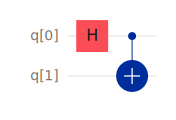

QuantumCircuits
I want to clarify that this package is not a wrapper around any quantum computing library. It is a standalone package that uses classical computation (Linear Algebra) to simulate quantum circuits. More about the mathematics behind the quantum circuits can be found in the Theory section.
Introduction
QuantumCircuits package was developed alongside my NIUS Project. This package mainly deals with the classical "Random Quantum Circuit simulation."
This package is heavily inspired by the QuantumInformation.jl package. The main difference between the two is that QuantumCircuits is more focused on the simulation of quantum circuits. At the same time, QuantumInformation is more focused on the mathematical aspects of quantum information theory.
For the time being, this package contains the following features:
Here, you can generate the following random matrices:
- Random Unitary
- Random Hermitian
Here, you can find the following utilities:
- Random State vector
- Zero State vector for a given number of qubits
- Check if a given state vector is a valid state vector
- Fidelity between two state vectors
- Probability of measuring a state vector on a given basis
- State vector after a projective measurement
- Creates a measurement operator for a given basis for a given qubit in a system
Theory
I would assume that you have some basic knowledge of quantum computing. If you don't, I would recommend you to go through the bible of quantum computing, Quantum Computation and Quantum Information by Michael A. Nielsen and Isaac L. Chuang.
To discuss how we simulate Quantum Circuit, lets discuss the mathematics with the example of Bell State. Using the standard convention set by Qiskit, lets initialize our quantum circuit composed of two qubits in state $|00\rangle$. Using following circuit we can create a Bell state from the initial state

So using basic linear algebra representation, we can write,
\[|0\rangle = \begin{bmatrix} 1 \\ 0 \end{bmatrix} \quad \implies \quad |00\rangle = \begin{bmatrix} 1 \\ 0 \end{bmatrix} \otimes \begin{bmatrix} 1 \\ 0 \end{bmatrix}\]
Here, we can simulate this circuit by representing this circuit as a unitary matrix, say $|\Psi\rangle$ is the final state of the circuit i.e.
\[|\Psi\rangle = [CX]~[H \otimes I]~|00\rangle\]
where $CX$ is the matrix representation of Controlled NOT Gate, and $H$ is the matrix representation of Hadamard Gate.
In general, these matrices can be combined into a single unitary matrix say $~\mathcal{U}$, and say our initial state is given by $|\Psi\rangle$, so after the evolution we have the final state $|\Phi\rangle$, as
\[|\Phi\rangle = \mathcal{U} ~ |\Psi\rangle\]
Magic of Measurements
We can use similar strategy to simulate projective measurements as well. Say we have a projection operator $\Pi$, and we want to do a measurement on the state $|\Psi\rangle$, so the state after the measurement can be calculated by,
\[|\Phi\rangle = \frac{ \Pi |\Psi\rangle }{ \langle \Psi | \Pi | \Psi \rangle }\]
Future Plans
I needed only a few features since I developed this package for my research. I will be adding more features in the future.
I will add more features in the future.
Special Thanks
I want to thank my mentor, Dr. Sambuddha Sanyal, for guiding me throughout the project. I would also like to thank HBCSE for providing me with this opportunity.